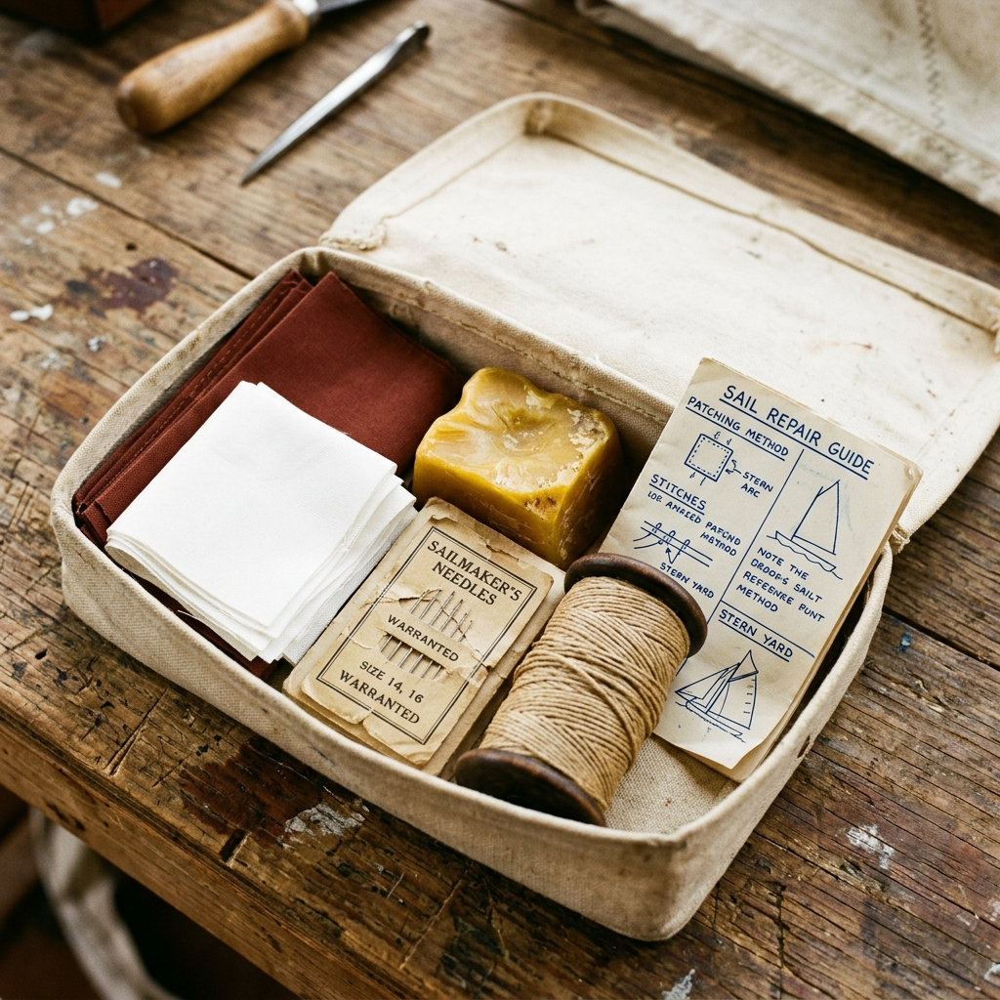

Hull & Hem Sailmenders
Hull & Hem Sailmenders
The loft, delivered to your chart table.
Professional-grade heavy dacron patches, pure wax, and proper needles, posted to you four times a year.

What comes in the Bosun's Quarterly Box
Four times a year — the first Monday of February, May, August and November — a small parcel goes out to Bosun's subscribers. It costs £64 per box, delivered, and it contains the spares Marta reckons you will actually reach for that quarter.
The autumn box, going out this November, holds six pre-cut 4.5oz Dacron patches in tanbark and white, a 40g block of pure beeswax, a No. 14 sailmaker's needle set, a length of 3mm waxed whipping twine, and a folded A5 repair card covering the two failures we see most in November post: leech tape lifting on the mainsail, and chafe on the genoa foot where it crosses the pulpit. There is usually a Cornish biscuit in the box as well. It is not advertised and it is not guaranteed.
Subscription tiers
We designed the Bosun's Box to be as flexible as a coastal cruiser's schedule. Whether you need a single emergency resupply before a long passage or a reliable year-round stock of professional materials, we have a tier that fits.
Single Box
£64 — one-off payment. This is the perfect option if you want to sample the quality of our materials or if you are preparing for a specific, isolated voyage. You will receive the box designated for the current quarter immediately upon ordering. There is no ongoing commitment and no rolling contract. It is a simple, straightforward purchase of professional sailmaker's supplies delivered to your door.
Bosun's Quarterly
£64 billed 4 times a year, rolling. (£6 off per box). Our most popular tier. For skippers who maintain their own canvas year-round, this ensures you are never caught short. The box ships automatically on the first Monday of February, May, August, and November. The £6 discount per box reflects the reliable nature of the rolling subscription, saving you £24 annually compared to buying four single boxes.
Loftkeeper's Year
£232 prepaid for the year. The ultimate support package for serious owner-skippers. By paying upfront for all four seasonal boxes, you secure the lowest possible price per box. More importantly, this tier includes one completely free Bench Mend at the loft, covering isolated repairs up to the value of £45. It is our way of ensuring that if a repair exceeds your own toolkit, we have your back in the signal box.
Seasonal contents calendar
The sea demands different preparations at different times of the year. Our quarterly boxes are not random assortments; they are highly specific responses to the seasonal wear and tear we see on the cutting bench at Lelant Saltings.
February
The winter lay-up box. Focused entirely on preventative maintenance while the boat is on the hard. Contains heavy splicing fids, thick whipping twine for halyards, and our largest pre-cut tanbark patches for reinforcing spreaders before the mast goes back in.
May
The fitting-out box. Designed for the final push before launch. It includes medium-weight Dacron patches for the genoa, a fresh block of pure beeswax to lubricate stiff hanks, and a specialized repair card detailing how to correctly seat brass cringles.
August
The peak-season chafe kit. When you are sailing hard every weekend, chafe is the enemy. This box prioritizes heavy leather offcuts for repairing worn guards, curved needles for working in tight corners on the boom, and adhesive anti-chafe tape.
November
The heavy-weather repair box. Designed for the harsh conditions of autumn sailing. It includes thick 6.5oz dacron, heavy waxed Barbour thread, and instructions specifically focused on repairing lifted leech tapes and torn mainsail feet before they blow out completely.
See the current boxGifting the Bosun's Box
It can be notoriously difficult to buy a meaningful gift for a seasoned sailor. They usually have very specific preferences and rarely appreciate generic nautical trinkets. The Bosun's Box is a gift of genuine utility, packed with the exact materials a working skipper respects. It is an ideal present for a retiring skipper planning a long cruise, or a thoughtful Christmas gift for the owner who spends the winter tinkering in the boatyard.
When you purchase a box as a gift, we include a handwritten note from Marta on heavy cardstock, tucked neatly inside the canvas packaging. You can specify the exact date you would like the first shipment to arrive, ensuring it lands perfectly for a birthday or holiday. Crucially, all gift subscriptions are strictly limited-term; there is absolutely no auto-renewal applied, so the recipient will never face unexpected charges.
Send a gift boxCancel or pause at any time
We believe that managing a subscription should not require navigating a maze of hidden menus or enduring a frustrating phone tree. Our focus is on repairing sails, not trapping customers in contracts they no longer need. The sea is unpredictable, and your sailing plans may change abruptly.
If you need to skip a quarter because you are fully stocked, or if you wish to pause the subscription for an entire season while your boat is out of the water undergoing refit, you can do so effortlessly. Simply send a short email directly to the loft. There are no automated forms to fill out. The same applies to cancellations: a single email requesting cancellation is processed immediately, with no questions asked and no retention pressure applied by our team.
Start with one box